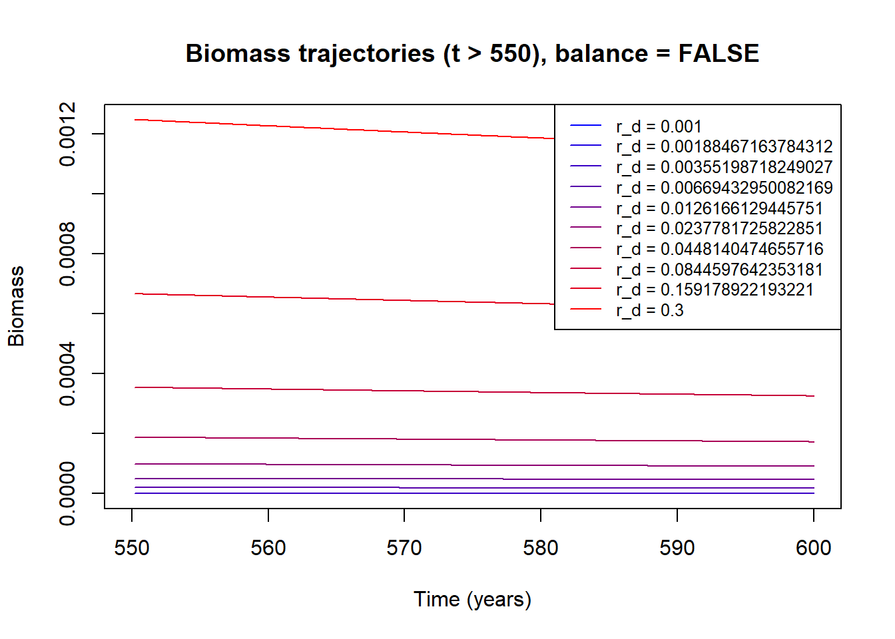
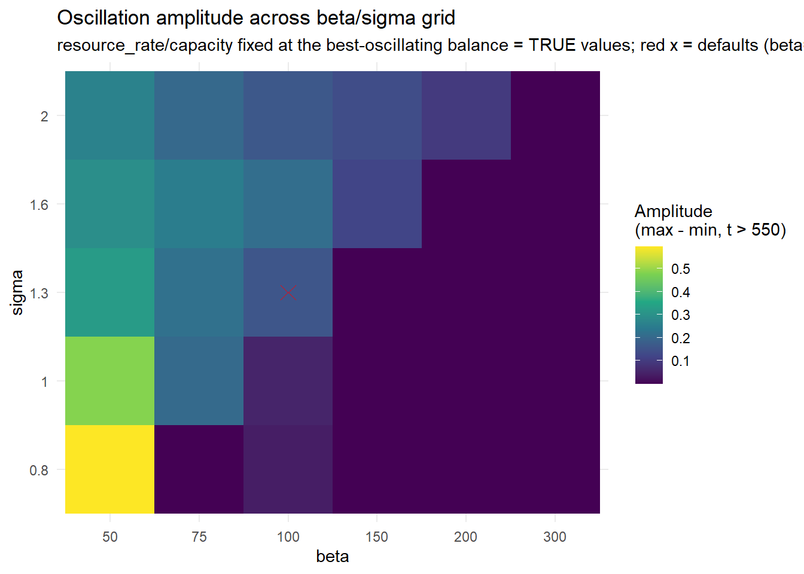
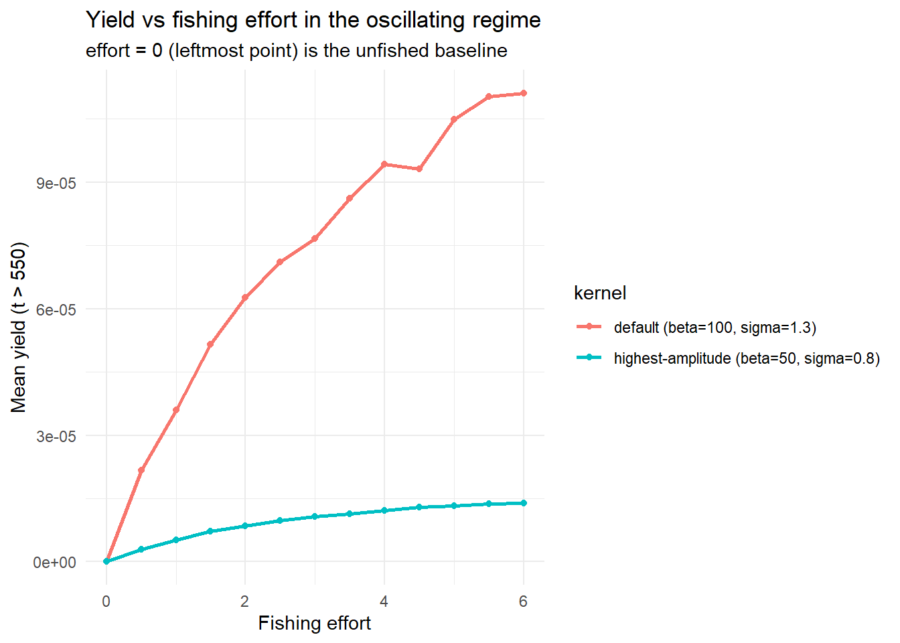
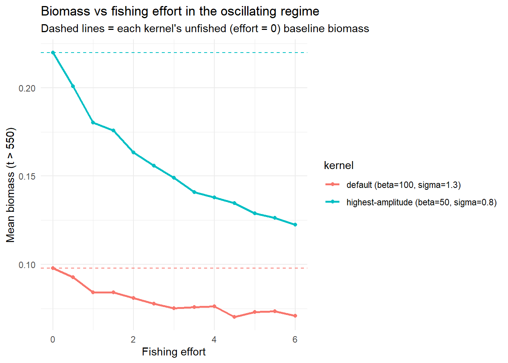
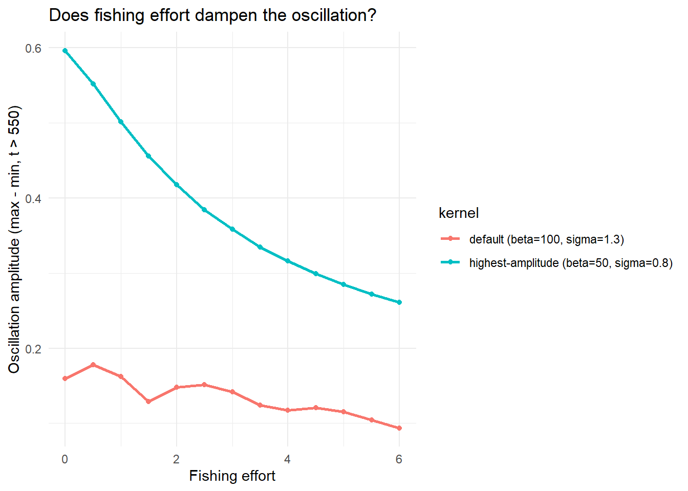
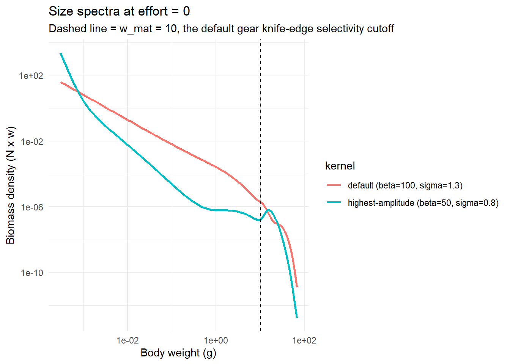
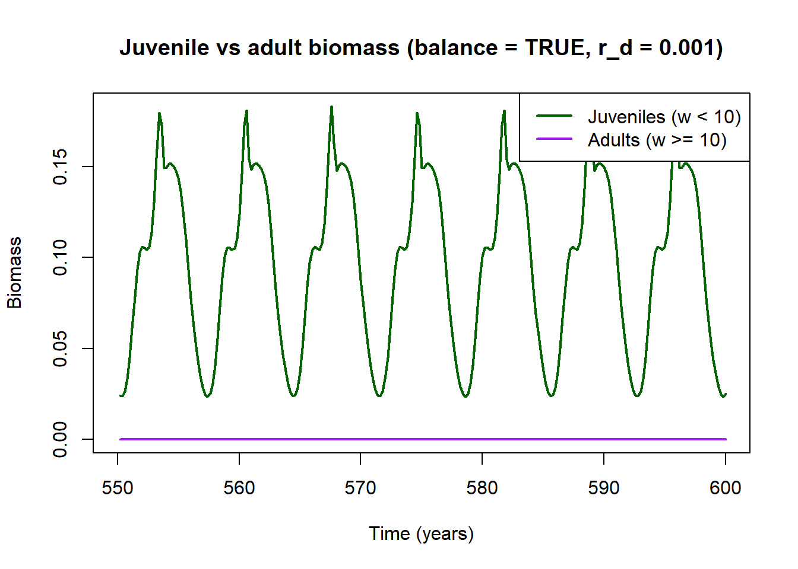

Code
library(mizer)
library(patchwork)
library(reshape2)
library(plotly)
library(dplyr)
library(mizerExperimental)
library(tidyverse)
library(glue)
library(ggplot2)
library(colorRamps)
library(future.apply)Samia
July 2, 2026
Day 18 confirmed one thing outright: the limit cycle is a stable global attractor (trajectories from perturbations spanning three orders of magnitude all converge to the same orbit). The bifurcation’s character was left open rather than settled: amplitude grows continuously from zero on the forward sweep (a supercritical signature), but the backward sweep sustains oscillation to a noticeably higher resource_decrease than the forward onset — a gap too large to write off as a sweep-start artefact alone, so a purely supercritical Hopf bifurcation couldn’t yet be confirmed. Its “What’s Next” list left several threads open: try a different perturbation type, run with balance = FALSE in the resource-setting step, plot maximum and minimum separately instead of max − min, and resolve whether that forward/backward gap is real hysteresis or a run-length artefact.
Today tackles the balance = FALSE thread, and it took a couple of false starts to understand what’s actually going on.
balance is now an explicit argument on make_params, defaulting to FALSE. r_d is the same log-spaced grid from 0.001 to 0.3 used in Day 18’s hysteresis sweep — it brackets the bifurcation point found there (rd ≈ 0.008), so every value tested produced clear oscillation under the default balance = TRUE setting.
make_params <- function(lambda = 2.05, resource_decrease = 0.001,
beta = NULL, sigma = NULL, balance = FALSE) {
a0 <- 100
kappa <- a0 * exp(-6.9 * (lambda - 1))
no_w <- round(log(66.5 / 0.0003) / 0.1)
args <- list(
species_name = "Anchovy",
w_min = 0.0003, w_max = 66.5, w_mat = 10,
no_w = no_w, lambda = lambda, kappa = kappa,
alpha = 0.1, gamma = 750, ks = 0
)
if (!is.null(beta)) args$beta <- beta
if (!is.null(sigma)) args$sigma <- sigma
params <- do.call(newSingleSpeciesParams, args)
r <- getResourceRate(params) * resource_decrease
setResource(params, resource_rate = r,
resource_dynamics = "resource_semichemostat", balance = balance)
}
make_limit_cycle_sim <- function(params, t_total = 600, effort = 0, perturbation = 1e3) {
params@initial_n_pp[] <- params@cc_pp * 0.1
sim_init <- project(params, t_max = 10, dt = 0.1, t_save = 0.2,
progress_bar = FALSE, effort = 0,
method = "predictor-corrector")
idx <- params@w >= 10 & params@w <= 100
last <- dim(sim_init@n)[1]
sim_init@n[last, , idx] <- sim_init@n[last, , idx] / perturbation
project(sim_init, t_max = t_total - 10, dt = 0.1, t_save = 0.2,
progress_bar = FALSE, effort = effort,
method = "tr_bdf2")
}
test_effort <- function(r_d, lambda = 2.05, t_total = 600, balance = FALSE) {
p <- make_params(lambda = lambda, resource_decrease = r_d, balance = balance)
sim <- make_limit_cycle_sim(p, t_total = t_total)
bm <- getBiomass(sim)[, "Anchovy"]
t <- as.numeric(names(bm))
list(sim = sim, bm = bm, t = t)
}
r_d <- exp(seq(log(0.001), log(0.3), length.out = 10))balance = FALSE Kill the Oscillation?The first pass just re-runs Day 18’s sweep with the new default (balance = FALSE):
plot(NULL, xlim = c(550, 600),
ylim = range(sapply(results_fishing, function(r) range(r$bm[r$t > 550]))),
xlab = "Time (years)", ylab = "Biomass", main = "Biomass trajectories (t > 550), balance = FALSE")
cols <- colorRampPalette(c("blue", "red"))(length(r_d))
for (i in seq_along(results_fishing)) {
r <- results_fishing[[i]]
mask <- r$t > 550
lines(r$t[mask], r$bm[mask], col = cols[i])
}
legend("topright", legend = paste0("r_d = ", r_d), col = cols, lty = 1, cex = 0.8)
Every trajectory is flat by \(t = 550\), across the entire range that produced clear oscillation under balance = TRUE on Day 18. Read at face value, this says balance = FALSE removes the oscillatory mechanism. That reading turns out to be wrong.
A controlled A/B settles it: the same grid, run with balance = TRUE and balance = FALSE, holding every other setting (solvers, perturbation, t_total) identical.
plan(multisession)
results_balance_true <- future_lapply(r_d, test_effort, balance = TRUE, future.seed = TRUE)
results_balance_false <- future_lapply(r_d, test_effort, balance = FALSE, future.seed = TRUE)
amp_by_balance <- data.frame(
r_d = r_d,
amp_balance_true = sapply(results_balance_true, function(r) {
late <- r$bm[r$t > 550]; max(late) - min(late)
}),
amp_balance_false = sapply(results_balance_false, function(r) {
late <- r$bm[r$t > 550]; max(late) - min(late)
})
)| r_d | amp_balance_true | amp_balance_false |
|---|---|---|
| 0.001000000 | 1.593367e-01 | 5.000000e-20 |
| 0.001884672 | 1.138260e-01 | 5.229620e-15 |
| 0.003551987 | 8.187341e-02 | 3.044118e-09 |
| 0.006694330 | 4.769457e-02 | 1.153583e-06 |
| 0.012616613 | 1.664753e-08 | 3.895321e-06 |
| 0.023778173 | 2.636800e-16 | 7.906750e-06 |
| 0.044814047 | 1.665300e-16 | 1.514768e-05 |
| 0.084459764 | 2.498000e-16 | 2.864715e-05 |
| 0.159178922 | 1.387800e-16 | 5.380267e-05 |
| 0.300000000 | 1.942900e-16 | 1.001213e-04 |
amp_balance_true reproduces Day 18’s bifurcation exactly: large amplitude (0.05–0.16) below r_d ≈ 0.008–0.02, then a hard drop to 1e-16-scale floating-point noise above it, which shows that it is stable fixed point. amp_balance_false never gets near that amplitude, but it doesn’t look like flat noise either: it climbs smoothly across roughly sixteen orders of magnitude, from 4.5e-20 at r_d = 0.001 up to 1e-4 at r_d = 0.3. Floating-point noise around a fixed point doesn’t behave like that but a quantity that scales smoothly with its own magnitude does, which is what it looks like if the biomass itself is climbing steadily across the grid rather than sitting at a fixed, non-oscillating level.
Checking final biomass directly, not just amplitude, confirms it:
| r_d | bm_final_true | bm_final_false |
|---|---|---|
| 0.001000000 | 0.02526607 | 1.608000e-17 |
| 0.001884672 | 0.13871143 | 1.536803e-10 |
| 0.003551987 | 0.11998995 | 7.175693e-07 |
| 0.006694330 | 0.10128766 | 1.861367e-05 |
| 0.012616613 | 0.08694962 | 4.647158e-05 |
| 0.023778173 | 0.08694962 | 9.077286e-05 |
| 0.044814047 | 0.08694962 | 1.724468e-04 |
| 0.084459764 | 0.08694962 | 3.255665e-04 |
| 0.159178922 | 0.08694962 | 6.125855e-04 |
| 0.300000000 | 0.08694962 | 1.147551e-03 |
At r_d = 0.001, bm_final_false is 1.6e-17 , the population is extinct , against bm_final_true’s real biomass of 0.025. It isn’t just the smallest r_d either: even at r_d = 0.3, the top of the entire tested range, bm_final_false (1.1e-3) is still roughly 76 times smaller than bm_final_true’s stable-fixed-point plateau (0.087). The population under balance = FALSE never reaches a biomass comparable to the balance = TRUE case anywhere in this grid, let alone the level needed to destabilise into a limit cycle.
balance = FALSE doesn’t remove the oscillatory mechanism. It chronically underfeeds the population across the whole resource_decrease range, and drives it toward extinction at the low end. The two settings were never testing comparable resource availability at the “same” resource_decrease value, resource_decrease = 0.3 under balance = FALSE leaves the population worse off than resource_decrease = 0.001 does under balance = TRUE.
A tempting shortcut here would have been to check resource_capacity (cc_pp) directly on a freshly built params object: it comes back identical between balance = TRUE and balance = FALSE, which looks like it rules capacity out entirely. It doesn’t so that check runs before any consumption dynamics exist for balance to compensate for, so its real effect only shows up once the model actually runs, as the biomass comparison above confirms.
A first attempt to find some destabilising effect under balance = FALSE scanned the feeding kernel (beta, sigma) at resource_decrease fixed at 0.001 and found nothing, every cell essentially zero amplitude. That’s explained by the previous section: at r_d = 0.001 under balance = FALSE the population is already deep in the near-extinct regime, and no feeding-kernel shape can matter when there’s essentially no population left to feed.
Repeating it properly means fixing resource_rate/resource_capacity at values that are actually known to sustain oscillation, pulled directly from the strongest balance = TRUE run above (r_d = r_d[1], amplitude 0.159), and varying beta/sigma on top of that known-good baseline instead of a starved one.
best_params <- make_params(resource_decrease = r_d[1], balance = TRUE)
best_rate <- best_params@rr_pp
best_capacity <- best_params@cc_pp
# Supplying both resource_rate and resource_capacity leaves nothing for
# balance to back-solve, so balance = FALSE here just sets them directly.
make_params_fixed_resource <- function(lambda = 2.05, resource_rate, resource_capacity,
beta = NULL, sigma = NULL) {
a0 <- 100
kappa <- a0 * exp(-6.9 * (lambda - 1))
no_w <- round(log(66.5 / 0.0003) / 0.1)
args <- list(
species_name = "Anchovy",
w_min = 0.0003, w_max = 66.5, w_mat = 10,
no_w = no_w, lambda = lambda, kappa = kappa,
alpha = 0.1, gamma = 750, ks = 0
)
if (!is.null(beta)) args$beta <- beta
if (!is.null(sigma)) args$sigma <- sigma
params <- do.call(newSingleSpeciesParams, args)
setResource(params, resource_rate = resource_rate, resource_capacity = resource_capacity,
resource_dynamics = "resource_semichemostat", balance = FALSE)
}
test_beta_sigma_fixed <- function(beta, sigma, resource_rate, resource_capacity,
lambda = 2.05, t_total = 600) {
p <- make_params_fixed_resource(lambda = lambda, resource_rate = resource_rate,
resource_capacity = resource_capacity,
beta = beta, sigma = sigma)
sim <- make_limit_cycle_sim(p, t_total = t_total)
bm <- getBiomass(sim)[, "Anchovy"]
t <- as.numeric(names(bm))
list(sim = sim, bm = bm, t = t, beta = beta, sigma = sigma)
}
# newSingleSpeciesParams() defaults to beta = 100, sigma = 1.3, so the grid
# is centred on those defaults with room to move in both directions.
beta_seq_fixed <- c(50, 75, 100, 150, 200, 300)
sigma_seq_fixed <- c(0.8, 1.0, 1.3, 1.6, 2.0)
grid_fixed <- expand.grid(beta = beta_seq_fixed, sigma = sigma_seq_fixed)
plan(multisession)
results_beta_sigma_fixed <- future_lapply(seq_len(nrow(grid_fixed)), function(i) {
test_beta_sigma_fixed(beta = grid_fixed$beta[i], sigma = grid_fixed$sigma[i],
resource_rate = best_rate, resource_capacity = best_capacity)
}, future.seed = TRUE)
amp_df_fixed <- data.frame(
beta = grid_fixed$beta,
sigma = grid_fixed$sigma,
amp = sapply(results_beta_sigma_fixed, function(r) {
late <- r$bm[r$t > 550]
max(late) - min(late)
})
)ggplot(amp_df_fixed, aes(x = factor(beta), y = factor(sigma), fill = amp)) +
geom_tile() +
geom_point(data = subset(amp_df_fixed, beta == 100 & sigma == 1.3),
aes(x = factor(beta), y = factor(sigma)),
shape = 4, size = 4, color = "red") +
scale_fill_viridis_c() +
labs(x = "beta", y = "sigma",
fill = "Amplitude\n(max - min, t > 550)",
title = "Oscillation amplitude across beta/sigma grid",
subtitle = "resource_rate/capacity fixed at the best-oscillating balance = TRUE values; red x = defaults (beta=100, sigma=1.3)") +
theme_minimal()
The red-marked cell is the default kernel (beta = 100, sigma = 1.3) behind every oscillation characterised in Days 10–18. This heatmap has real structure: amplitude ranges smoothly from around 0.05 (dark, top-right) up to over 0.5 (bright yellow, beta = 50, sigma = 0.8), with the default sitting mid-range around 0.25–0.3. Narrower, more concentrated feeding kernels (lower beta, lower sigma) sustain a noticeably larger-amplitude oscillation than the default; wider ones damp it down.
Checking the actual biomass trajectories behind the darkest cells (not shown in full here) rules out one obvious confound: most low-amplitude cells are near-fixed-points, not starvation. But a couple are still slowly relaxing toward their eventual level rather than truly flat by t = 600, and one (beta = 150, sigma = 0.8) develops irregular, non-periodic fluctuation on a much longer run, a possible chaos signature, parked here for a proper Poincaré-map test (see Theoretical Grounding below).
The more immediately useful question is what fishing does to yield in the parts of this grid that are unambiguously oscillating: the default kernel (beta = 100, sigma = 1.3) and the highest-amplitude one (beta = 50, sigma = 0.8), both run across a range of effort values on the same fixed best-oscillating resource baseline. effort = 0 (no fishing) is the baseline every fished run is compared against.
test_effort_fixed <- function(effort, beta, sigma, resource_rate, resource_capacity,
lambda = 2.05, t_total = 600) {
p <- make_params_fixed_resource(lambda = lambda, resource_rate = resource_rate,
resource_capacity = resource_capacity,
beta = beta, sigma = sigma)
sim <- make_limit_cycle_sim(p, t_total = t_total, effort = effort)
bm <- getBiomass(sim)[, "Anchovy"]
yield <- getYield(sim)[, "Anchovy"]
t <- as.numeric(names(bm))
list(sim = sim, bm = bm, yield = yield, t = t,
effort = effort, beta = beta, sigma = sigma)
}
effort_seq <- seq(0, 6, length.out = 13) # extended from 0-2: both curves were still climbing at effort = 2
fishing_kernels <- list(
list(beta = 100, sigma = 1.3, label = "default (beta=100, sigma=1.3)"),
list(beta = 50, sigma = 0.8, label = "highest-amplitude (beta=50, sigma=0.8)")
)
plan(multisession)
fishing_results <- lapply(fishing_kernels, function(k) {
runs <- future_lapply(effort_seq, function(e) {
test_effort_fixed(effort = e, beta = k$beta, sigma = k$sigma,
resource_rate = best_rate, resource_capacity = best_capacity)
}, future.seed = TRUE)
list(kernel = k, runs = runs)
})
fishing_summary <- bind_rows(lapply(fishing_results, function(fr) {
data.frame(
kernel = fr$kernel$label,
effort = effort_seq,
mean_bm = sapply(fr$runs, function(r) mean(r$bm[r$t > 550])),
mean_yield = sapply(fr$runs, function(r) mean(r$yield[r$t > 550])),
amp = sapply(fr$runs, function(r) {
late <- r$bm[r$t > 550]; max(late) - min(late)
})
)
}))ggplot(fishing_summary, aes(x = effort, y = mean_yield, color = kernel)) +
geom_line(linewidth = 1) + geom_point() +
labs(x = "Fishing effort", y = "Mean yield (t > 550)",
title = "Yield vs fishing effort in the oscillating regime",
subtitle = "effort = 0 (leftmost point) is the unfished baseline") +
theme_minimal()
baseline_bm <- fishing_summary[fishing_summary$effort == 0, c("kernel", "mean_bm")]
names(baseline_bm)[2] <- "baseline_bm"
ggplot(fishing_summary, aes(x = effort, y = mean_bm, color = kernel)) +
geom_line(linewidth = 1) + geom_point() +
geom_hline(data = baseline_bm, aes(yintercept = baseline_bm, color = kernel),
linetype = "dashed") +
labs(x = "Fishing effort", y = "Mean biomass (t > 550)",
title = "Biomass vs fishing effort in the oscillating regime",
subtitle = "Dashed lines = each kernel's unfished (effort = 0) baseline biomass") +
theme_minimal()

effort_seq was extended from 0–2 to 0–6 after a first pass, since both yield curves were still climbing at effort = 2. Biomass declines smoothly for both kernels, the highest-amplitude kernel drops about 44% from its unfished baseline (0.225 → 0.125), the default about 28% (0.097 → 0.07), but neither collapses to zero even by effort = 6, and yield still hasn’t peaked for either: the default flattens near the top (~1.05e-4) but hasn’t turned down, and the highest-amplitude kernel has essentially plateaued around 1.5e-5. Since neither stock is collapsing, there’s no maximum-sustainable-yield hump showing up in this range; as fishing reduces the fish population, predation pressure on the resource likely eases and lets it partially recover, buffering yield and pushing any real hump further out than effort = 6. The wider range also resolves an earlier ambiguity about damping: the default kernel’s amplitude does decline with effort (0.16 → ~0.08, roughly halved), it just needed the wider window to separate the trend from noise; the highest-amplitude kernel’s decline is smooth and monotonic throughout (0.6 → 0.27).
Most striking: the highest-amplitude kernel has more than double the default kernel’s unfished biomass (~0.22 vs ~0.097) but produces roughly 8× less yield at every effort level tested. More standing stock is not turning into more catch. Gear selectivity here is knife-edge at w_mat by default, meaning only fish above that size are catchable.So if the highest-amplitude kernel’s biomass is concentrated below that cutoff, that alone explains the mismatch. This is checkable for free, reusing the sim objects already stored from the effort = 0 runs above:
unfished_default <- fishing_results[[1]]$runs[[which(effort_seq == 0)]]$sim
unfished_highest_amp <- fishing_results[[2]]$runs[[which(effort_seq == 0)]]$sim
last_default <- dim(unfished_default@n)[1]
last_highamp <- dim(unfished_highest_amp@n)[1]
spectrum_df <- bind_rows(
data.frame(
w = unfished_default@params@w,
biomass_density = unfished_default@n[last_default, 1, ] * unfished_default@params@w,
kernel = "default (beta=100, sigma=1.3)"
),
data.frame(
w = unfished_highest_amp@params@w,
biomass_density = unfished_highest_amp@n[last_highamp, 1, ] * unfished_highest_amp@params@w,
kernel = "highest-amplitude (beta=50, sigma=0.8)"
)
)
ggplot(spectrum_df, aes(x = w, y = biomass_density, color = kernel)) +
geom_line(linewidth = 1) +
geom_vline(xintercept = 10, linetype = "dashed") +
scale_x_log10() + scale_y_log10() +
labs(x = "Body weight (g)", y = "Biomass density (N x w)",
title = "Size spectra at effort = 0",
subtitle = "Dashed line = w_mat = 10, the default gear knife-edge selectivity cutoff") +
theme_minimal()
Both curves drop steeply right at w_mat = 10, but they also cross a couple of times near the cutoff, so it’s hard to tell by eye which kernel actually has more catchable biomass. Quantifying it directly (correctly, weighting by the log-spaced bin width dw, the same integral getBiomass() uses internally):
catchable_fraction <- function(sim, cutoff = 10) {
last <- dim(sim@n)[1]
w <- sim@params@w
dw <- sim@params@dw
bm_density <- sim@n[last, 1, ] * w * dw
total_bm <- sum(bm_density)
catchable_bm <- sum(bm_density[w >= cutoff])
data.frame(total_bm = total_bm, catchable_bm = catchable_bm,
catchable_fraction = catchable_bm / total_bm)
}
catchable_summary <- rbind(
data.frame(kernel = "default (beta=100, sigma=1.3)",
catchable_fraction(unfished_default)),
data.frame(kernel = "highest-amplitude (beta=50, sigma=0.8)",
catchable_fraction(unfished_highest_amp))
)
knitr::kable(catchable_summary)| kernel | total_bm | catchable_bm | catchable_fraction |
|---|---|---|---|
| default (beta=100, sigma=1.3) | 0.0252661 | 7.9e-06 | 3.13e-04 |
| highest-amplitude (beta=50, sigma=0.8) | 0.1837927 | 6.0e-06 | 3.26e-05 |
Confirmed. Despite having roughly 7× more total biomass, the highest-amplitude kernel has slightly less absolute catchable biomass than the default (5.98e-6 vs 7.91e-6), and its catchable_fraction is about 10× lower (0.0033% vs 0.031%). Nearly all of that kernel’s extra standing stock is juveniles that never cross the w_mat = 10 selectivity cutoff.So the “more biomass” seen in the size-spectrum plot is largely fictitious from the fishery’s perspective, and is the primary explanation for the yield gap.
Feeding-kernel shape sets oscillation amplitude directly: narrower, more concentrated kernels sustain larger-amplitude cycles than the default. Fishing effort reduces biomass smoothly in both kernels without finding a maximum-sustainable-yield peak in the tested range, most likely because eased predation pressure lets the resource partially recover as the fish population is fished down. And a striking yield/biomass mismatch between kernels — more standing stock but far less catch — turns out to be a size-selectivity effect: most of the higher-amplitude kernel’s extra biomass is juveniles below the catchable-size cutoff, not extra mature stock.
Both size spectra above show a steep drop in biomass right at w_mat = 10 ; several orders of magnitude fewer individuals ever reach a catchable, mature size than exist as juveniles. Going back to the original Day 18-style regime (balance = TRUE, resource_decrease = r_d[1] = 0.001, default perturbation, reusing the sim already computed in results_balance_true[[1]]), the natural first check is whether adults or juveniles oscillate more:
track_life_stages <- function(sim, w_mat = 10) {
bm_juv <- getBiomass(sim, max_w = w_mat)[, "Anchovy"]
bm_adult <- getBiomass(sim, min_w = w_mat)[, "Anchovy"]
t <- as.numeric(names(bm_juv))
data.frame(t = t, bm_juv = bm_juv, bm_adult = bm_adult)
}
day18_sim <- results_balance_true[[1]]$sim
life_stage_bm <- track_life_stages(day18_sim)
mask <- life_stage_bm$t > 550plot(NULL, xlim = c(550, 600),
ylim = range(c(life_stage_bm$bm_juv[mask], life_stage_bm$bm_adult[mask])),
xlab = "Time (years)", ylab = "Biomass",
main = "Juvenile vs adult biomass (balance = TRUE, r_d = 0.001)")
lines(life_stage_bm$t[mask], life_stage_bm$bm_juv[mask], col = "darkgreen", lwd = 2)
lines(life_stage_bm$t[mask], life_stage_bm$bm_adult[mask], col = "purple", lwd = 2)
legend("topright", legend = c("Juveniles (w < 10)", "Adults (w >= 10)"),
col = c("darkgreen", "purple"), lwd = 2)
Juveniles and adults sit at very different biomass scales, so relative amplitude (amp / mean) is the fair comparison, not absolute amplitude:
rel_amp <- function(x) (max(x) - min(x)) / mean(x)
life_stage_summary <- data.frame(
stage = c("Juvenile (w < 10)", "Adult (w >= 10)"),
mean_bm = c(mean(life_stage_bm$bm_juv[mask]), mean(life_stage_bm$bm_adult[mask])),
amp = c(max(life_stage_bm$bm_juv[mask]) - min(life_stage_bm$bm_juv[mask]),
max(life_stage_bm$bm_adult[mask]) - min(life_stage_bm$bm_adult[mask])),
rel_amp = c(rel_amp(life_stage_bm$bm_juv[mask]), rel_amp(life_stage_bm$bm_adult[mask]))
)
knitr::kable(life_stage_summary)| stage | mean_bm | amp | rel_amp |
|---|---|---|---|
| Juvenile (w < 10) | 0.0977290 | 0.1592718 | 1.629730 |
| Adult (w >= 10) | 0.0000497 | 0.0001048 | 2.107687 |
The result is the opposite of expected. Adults show higher relative amplitude than juveniles (~2.11 vs ~1.63) and proportionally, the rare mature fish swing more than the abundant juveniles do, not less. But that answers a different question from the one that actually matters here: how much either life stage oscillates around its own mean says nothing about why the standing-stock ratio between juveniles and adults is so lopsided in the first place. That’s a demographic question, more about survivorship through growth, cumulative mortality, and how long an individual takes to grow from w_min to w_mat and not a dynamical one about oscillation amplitude.
Alongside the coding, the next stretch of work is going through Nonlinear Dynamics and Chaos (Strogatz), sections 8.3–8.7, plus the accompanying exercises. These chapters line up almost exactly with the open questions this project has been circling since Day 18: what kind of bifurcation this is, whether the parked beta = 150, sigma = 0.8 cell is chaos, quasiperiodicity, or a slow transient, and how to test for hysteresis properly rather than by eye.
Plot maximum and minimum separately: Instead of plotting max − min, to get a bifurcation-diagram look at the amplitude data rather than a single collapsed amplitude curve.
Try a different perturbation type: To see whether the same convergence-to-attractor result holds no matter what form the perturbation takes, rather than relying solely on the mature-stock knock-down used so far.
Working through the Nonlinear Dynamics book: Continuing Strogatz sections 8.3–8.7 on global bifurcations, hysteresis, quasiperiodicity, and Poincaré maps, to properly ground the bifurcation classification and diagnose the parked chaos-looking cell.
Think on why there is so much biomass accumulated at juvenile stages: The survivorship-through-growth question raised above but not resolved.